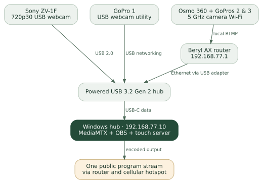

Camera fit
| Camera | Feed into OBS | Physical check |
|---|---|---|
| Sony ZV-1F | USB webcam, 1280 × 720 MJPEG at 30 fps (25 fps in PAL). PCM stereo at 48 kHz. | Select USB Streaming, use 30 fps for this kit and confirm “USB Streaming:Output” with the OBS source open. Sony documents no on-camera network livestream for this model in its Creators’ App compatibility table. |
| GoPro 1 | Default is the Windows GoPro Webcam utility over USB. Select its virtual device in OBS. The camera’s USB feed carries video. | Verify exact variant, current Windows utility and moving preview first. For a supported model, local Wi-Fi RTMP on live/gopro1 removes the wired GoPro exception. |
| DJI Osmo 360 | DJI Mimo custom RTMP, single lens, 1920 × 1080 at 30 fps. The live shot is a flat view. | Use current firmware and Mimo. Verify the secured LAN cold-start procedure. DJI specifies internet access during livestream setup. |
| GoPro 2 and 3 | Each compatible camera publishes its own RTMP via Quik on the camera SSID. | HERO7 Black tops out at 720p for live output. Verify the full model and its offered modes, especially Mini, MAX, and entry-level variants. |
If literal USB 3.0 UVC is fixed, use the local wireless GoPro positions and leave the Sony position unbound pending a camera change or an approved transport. The reference build below retains the Sony and makes the two wired exceptions explicit.
Sony USB terminal · Sony streaming formats · Sony camera compatibility · GoPro transport and power · DJI video specs · DJI startup requirements
Wiring and power

| From | To | Cable and role |
|---|---|---|
| Anker SOLIX C300 DC (A1726), USB-C1 | Intel Surface Pro 9, first USB-C | 100 W / 5 A e-marked C-to-C cable. Independent PD power for the precharged tablet. The reference host is Windows 11 x64, Intel Core i5/i7, 16 GB RAM and hardware H.264 encoding. An existing equivalent laptop can serve as the hub. |
| C300 DC, switched 12 V car outlet | StarTech HB31C5A2CME powered hub | Fused 12 V accessory plug to the hub’s marked 7–24 V DC two-wire terminal. Use a 5 A fused harness rated for that current and verify polarity at the terminal before connection. Supplies downstream camera power separately from the tablet. |
| StarTech upstream USB-C | Surface, second USB-C | Included 10 Gbps USB-C host cable. Keep the hub powered when plugging in cameras. |
| Two downstream USB-C data/charge ports | Sony and GoPro 1 | Short, data-capable C-to-C cables. The port guide rates each at up to 5 V / 3 A. Camera and hub determine actual draw. Use USB-C data/charge ports with their labels visible. |
| StarTech downstream USB-A | GL.iNet Beryl AX (GL-MT3000) LAN | USB 3 Gigabit Ethernet adapter plus short Ethernet cable. Only infrastructure uses Ethernet. All camera connections are USB or local Wi-Fi. |
| C300 DC, USB-C4 | Beryl AX power input | 5 V / 3 A USB-C cable. Router advertises under 8 W. This budget uses the router’s Wi-Fi repeater to reach a separate cellular phone. |
| Three individual Anker A1384 20K/30 W packs | DJI and two wireless GoPros | One local C-to-C power lead per camera. Budget each at 12 W continuous. Add a fourth pack if GoPro 1 also moves to Wi-Fi. |
USB bus load. The USB 3.2 Gen 2 upstream carries up to 10 Gbps shared across devices. Sony stays on the high-speed USB 2 branch (480 Mbps signaling) with variable-rate MJPEG. GoPro documents about 6 Mbps for the USB webcam stream. The LAN adapter carries roughly 22 Mbps of incoming camera video in the reference build. Avoid saturating the same hub by offloading your media cards during a show.
Camera power. Insert a charged NP-BX1 and turn Sony Setup → USB → USB Power Supply on. The charged battery remains installed while the external source powers the camera. GoPro’s external-power behavior depends on model, supply current, cable and operating temperature. Begin with a charged battery, verify external power under load and check the percentage at 0, 30 and 180 minutes. A falling percentage means that path has not passed the power test. Use local power-only connections on remote cameras so they stay in wireless mode.
| Estimated continuous load | Device output watts |
|---|---|
| Precharged Intel tablet running OBS, hardware encoder, decoders and display | 38 W |
| Powered USB hub and Ethernet adapter | 4 W |
| Wired Sony allowance + wired GoPro allowance | 7.5 W + 10 W |
| Field router | 8 W |
| Central station total | 67.5 W |
| Three remotely powered cameras + hotspot phone + setup/control phone | 3 × 12 W + 2 × 4 W |
| Five-camera system including two phones | 111.5 W across separate batteries |
The central estimate is 288 Wh × 0.85 conversion efficiency × 0.90 usable fraction ÷ 67.5 W = 3 h 16 min, excluding the tablet’s internal cell. For a three-hour target, keep average external load at or below 73.4 W. At 85 W the same station gives about 2 h 36 min. The USB-C1, USB-C4 and 12 V combination is within Anker’s simultaneous-output table.
A 20K pack with at least 72 Wh on its label gives roughly 55 usable Wh at those same factors. That is about 4 h 35 min at 12 W per camera. To power the complete system externally, use one C300 DC plus five 20K packs (three remote cameras and two phones). A phone’s verified internal battery can cover its slot. Budget any phone charged from the router or tablet against the central station instead. Simulate field temperature, screen brightness, cellular use and all decoders during the rehearsal.
Surface models and ports · StarTech port ratings · Anker C300 DC manual, pp. 10–11 · A1384 output ratings · Router specifications · Sony external power
Local video and cellular upload
Use a private Forge-Cameras 5 GHz main SSID with WPA2-AES and client isolation off. In Minnesota, start on channel 36 at 40 MHz. Set the router to 192.168.77.1/24 and Windows Ethernet to 192.168.77.10/24. Assign router DHCP clients .100–.199. For the default arrangement, use .1 as the hub gateway and DNS. The router reaches the dedicated phone’s hotspot on 2.4 GHz. Keep the upstream subnet distinct.
| Wireless input | Destination entered in the camera app | Initial rate plan |
|---|---|---|
| DJI | rtmp://192.168.77.10/live/dji | Budget 6 Mbps. Verify the actual rate. |
| GoPro 1, when wireless | rtmp://192.168.77.10/live/gopro1 | Where manual controls are available, request 4,500 kbps starting and 6,000 kbps maximum. Quik adapts. Reserve up to 8 Mbps each. Use 720p30 on small tiles when necessary. |
| GoPro 2 | rtmp://192.168.77.10/live/gopro2 | |
| GoPro 3 | rtmp://192.168.77.10/live/gopro3 |
Each path becomes a local rtsp://127.0.0.1:8554/live/… input for OBS and the watchdog. Reserve around 22 Mbps raw camera payload with two wireless GoPros, or 30 Mbps with three. Target at least twice that in measured LAN throughput at the farthest stand. The program upload travels once over cellular. A 4.5 Mbps program plus 128 kbps audio uses about 2.08 GB/hour before overhead. Target a measured, sustained 9–10 Mbps uplink for that starting profile.
For camera-specific app screens, bitrate measurement, separate modem routing and offline restart checks, see Wireless.md. A phone used for Mimo or Quik may temporarily join a camera’s own network. A separate WAN handset keeps that from interrupting the public connection.
Commissioning
1 · Identify the cameras before buying the hub
Record the complete GoPro model and firmware from each camera. Identify which one offers both GoPro Webcam on Windows and a moving USB preview. Decide whether the Sony’s USB 2.0 link and the GoPro’s USB utility are acceptable. The Wi-Fi-only GoPro option leaves only the Sony exception.
2 · Prepare Windows and OBS at home
Extract the entire ZIP into a stable, writable folder, such as C:\FieldHub. Use Intel/AMD Windows x64, a current 64-bit OBS Studio with WebSocket v5, 64-bit Python 3.11 or newer, and an FFmpeg 6+ Windows build. Place its ffmpeg.exe in tools\, or make it available on PATH. Install the compatible GoPro Webcam utility for the wired option. The MediaMTX Windows executable and Python dependency wheels are included.
Double-click Prepare-Python.cmd. It installs the bundled Python packages into this folder’s private environment. In OBS, create a dedicated profile for field streaming, enable the authenticated WebSocket server in Tools on port 4455, and set a 16:9 canvas (1920 × 1080) at exactly 30 fps.
Start at 1280 × 720 output for the first site test, then try 1080p30. Select hardware H.264 (Intel Quick Sync on the reference tablet), CBR 4,500 kbps, 2 s keyframes, AAC 128 kbps, 48 kHz. Use the destination’s supported settings. Enable OBS network automatic reconnect. Keep private recording available during a WAN drop. Enter the destination and public stream key only in OBS.
OBS Studio · Python for Windows · FFmpeg Windows builds · GoPro Webcam · OBS WebSocket setup
3 · Bring up the field LAN and receiver
Connect the station, tablet, hub and Beryl as shown. Set the field Ethernet and router addresses from the Network section. From an elevated Windows PowerShell opened in the kit folder, apply the scoped firewall rules once.
powershell.exe -NoProfile -ExecutionPolicy Bypass -File .\Configure-Field-Firewall.ps1
The rules allow camera ingress on TCP 1935 and panel access on TCP 8088 on the field adapter. They block LAN access to OBS WebSocket 4455 on that adapter. Loopback is used for control, RTSP and diagnostics. Leave router port forwarding and UPnP off.
For the default wired GoPro, double-click Start-FieldHub.cmd. For a first build with wireless GoPro 1, run the following in PowerShell from the kit folder. The launcher displays the password prompt and private phone-pairing link.
$env:FIELDHUB_GOPRO1 = 'wifi' .\Start-FieldHub.cmd
The launcher uses the dedicated OBS scene collection Field Hub. To change GoPro 1 transport later, rename the existing collection as a backup in OBS, stop outputs and launch again with the desired transport (usb or wifi). Stored source bindings and calibration belong to each collection.
4 · Bind the two wired devices and start each wireless feed
On the Sony, use Setup → USB → USB Connection Mode → USB Streaming, then connect its data cable. In the Field / Sony source Properties choose the Sony camera, and verify 1280 × 720 at 30 fps. For wired GoPro 1, open GoPro Webcam, enable its camera connection mode as directed for the exact model, confirm its preview, then choose the GoPro virtual device for Field / GoPro 1. Cover each lens separately to check the bindings.
On the DJI, use Mimo’s single-lens custom RTMP. On each extra GoPro, use Quik’s Live → RTMP. Choose Forge-Cameras and paste the unique local destination from the table. Confirm each live tile before pairing the next camera. Leave the extra GoPro position offline if you have only two GoPros.
New camera-source audio is muted. Choose one master microphone. For reliable audio across every scene, use a global OBS Mic/Aux device in the dedicated profile (Sony audio if available as a Windows input, or a separate mic); disable unused global desktop/mic captures. Check the meter and listen to a local recording while switching scenes.
Measure and apply camera delay
A 30 fps program frame spans 33.33 ms. Use the latest arriving feed as the timing reference. An earlier camera needs a positive delay. The Sony and wired GoPro have different processing paths, so measure them separately. GoPro itself quotes about 210 ms minimum for its USB path.
Record the shared optical timing target
With outputs idle, select Field - Grid. Run the following in the kit folder to remove prior kit calibration filters. Put a second display where every camera can see it, open the target and frame it so it covers the center of every live tile. Lock exposure if auto-exposure pumps. Keep a constant 30 fps OBS profile and use the full 16:9 grid recording without cropping.
.\Field-OBS.cmd clear-sync
Start a local recording, then press Start target on the second display within 10 seconds. Five spaced white pulses appear. Keep the target visible until it finishes and then stop recording. On a field phone, open http://192.168.77.10:8088/calibration/Sync-Target.html in its browser. The analyzer reads the first 75 seconds. Open Sync-Target.html
Calculate offsets and verify them on new flashes
Drag the recording file onto Measure-Sync.cmd. The report lists five arrival frames per camera and the required delay in frames and milliseconds. Inactive positions are skipped. Two or more live cameras are required. Copy the printed Field-OBS.cmd calibrate command into PowerShell in the kit folder when all outputs are idle. To inspect the filter plan first, append --dry-run.
Each Render Delay filter accepts up to 500 ms. The script divides the measured delay across whole-frame filter stages and writes each camera independently. For example, an arrival difference of 57 frames at 30 fps means a target correction of 1,900 ms. That is an illustration. Your recording supplies the real correction.
Record a fresh five-pulse sequence with the filters active. Read residual offsets from its report. Accept only if every tested pulse is within one output frame across cameras. Keep the applied delays for that check. If it fails, clear the filters and measure a new baseline. If residuals change between pulses, improve the radio link and recheck after reconnecting a camera. Long GPU frame buffers consume graphics memory. Use View → Stats to check rendering and encoding lag with the buffers enabled.
For audio, record a visible clap with the master mic. In Advanced Audio Properties, adjust its Sync Offset by the measured time the clap arrives early, then record another clap. If audio arrives late, add an appropriate common video delay or choose a lower-latency audio path, then repeat the check.
Field operation
One-click startup. With the prepared hub on its field LAN, run Start-FieldHub.cmd. It checks the assigned IP, starts or reuses the receiver, checks its listeners, opens OBS, prepares the field scenes when idle, and starts the panel and watchdog. The operator starts camera publishing in Mimo/Quik and presses Start Streaming in OBS after the picture and audio check.
Switching. Join the control phone to Forge-Cameras and open the private pairing link shown by the launcher (port 8088). The panel switches immediately between the five-camera grid, Sony with DJI inset, and each of five full-screen shots. It can request a program snapshot. On the tablet, View → Multiview (Windowed) gives moving previews; enable click-to-switch in OBS multiview settings. Keep the grid visible there to keep the video delay buffers rendering between cuts. OBS multiview guide
Control panel and calibration reference
Camera loss. A local FFmpeg reader decodes each wireless input and measures advancing frames. Once a steady feed falls below the threshold, the watchdog hides its scene items after roughly four seconds without qualifying samples. A labeled camera slate appears underneath. After at least two seconds of sustained ≥5 decoded fps, the watchdog restores the source when OBS is ready. Startup grace is eight seconds; receiver negotiation can add time. Other tiles and the program encoder keep running. A camera sending fresh duplicate frames of a still picture can continue to pass this transport check.
Recovery. For a missing tile, check the camera’s power and LAN connection, confirm its unique RTMP path, then resume Go Live in its app if the camera stopped publishing. Leave the other paths and the broadcast running. Consult %LOCALAPPDATA%\ForgeFieldHub\watchdog.log and watchdog-status.json for decode status. For a WAN outage, keep the LAN/router powered and record locally while OBS attempts its outbound reconnect. A sustained loss of cellular service interrupts the public stream. At wrap, stop the OBS output and recording, stop the camera publishers, then shut down Windows before disconnecting station power.
Verification before the first field broadcast
| Check | Pass condition |
|---|---|
| Picture and control | Cover each lens, identify its tile on the tablet and select all seven shots from the phone. Check the master audio on a saved clip. |
| Camera failure | While privately recording, stop one wireless publisher for 15 seconds. Its slate appears; other angles move and audio continues. Restart that camera’s local stream and confirm its tile returns without relaunching OBS. |
| Radio vs. cellular | With OBS public output stopped, confirm WAN bytes stay near idle while camera LAN traffic climbs. Then privately publish one composite and measure the WAN rate. Disconnect only the WAN and verify camera behavior through an interruption and a separate cold start. |
| Timing | Check independent flashes before the show and after a wireless reconnect. Maximum spread is one 30 fps output frame. Check the clap separately. |
| Power and heat | Run the final profile, control phone and all five angles for at least three continuous hours at field brightness and temperature. Log station watts, start/end charge of each device, render/encode lag and thermal stops. Aim for 10% central reserve and stable wired camera batteries. |
Software verification. Four concurrent synthetic RTMP publishers decoded through the pinned MediaMTX receiver. Dropping and restarting one left the other three running. The watchdog hid and restored grid/full-screen items using real decoded video and a simulated OBS WebSocket endpoint. A five-angle timing fixture recovered all five known offsets. Physical cameras, the Windows host, RF range, audio alignment and battery runtime require the field checks above.
Bundled receiver: MediaMTX v1.21.4, Windows x64. SHA-256 of mediamtx.exe is 18ea5e8ddbe561c99262679acd03faab4a284713bda6e8a21319fc1b57f9765e. Upstream release · License